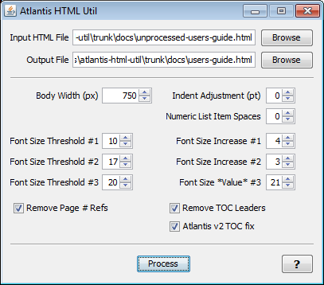

sizes smaller than threshold #1 will be increased by adjustment #1
sizes smaller than threshold #1 will be increased by adjustment #1
Atlantis HTML Utility
A small program to improve the appearance of HTML generated by Atlantis Word Processor
Atlantis Word Processor is a lovely little program—fast, small, stable—and can export documents as (among other formats) HTML. However, the exported HTML uses a lot of inline styles and hard-coded font sizes, which often aren't rendered optimally by web browsers.
This program post-processes Atlantis-generated HTML files to make them more visually pleasant.
Currently, this utility can perform these modifications:
• Center and change the document body width
• Scale up font-sizes, in three different tiers
• Adjust horizontal indentation
• Insert spaces between numeric list text and the item text.
• Remove inline page references
• Remove Table of Contents (TOC) leader dots
As an example of how this tool processes a file, you can compare this manual's original HTML output with the processed version, before being processed by Atlantis HTML Utility. And here is a PDF version of the same document, printed from Atlantis directly.
Atlantis HTML Utility is distributed as a ZIP file, needing no installation. Just unpack it somewhere and run FormatAtlantisHTML.exe for the GUI version, or FAHc.exe for the command-line version.
• FormatAtlantisHTML-1.2.zip (27.7 MB) has all necessary components bundled with it, and should work on any version of Windows XP SP3 or higher, without having to install Java.
• FormatAtlantisHTML-no_JRE-1.2.zip (1.4 MB) doesn't contain a Java runtime. Use this version if you're sure you have Java 7 or 8 installed, and you want a smaller download size.

Input HTML File
Choose the HTML file exported by Atlantis that you want to process. Note that if you use the Browse button (as opposed to pasting the file name), the Atlantis HTML Utility will check if you have a saved properties file (named "<input file>-format.prefs") associated with that HTML document, and if so, will load your previous settings.
Output HTML File
The name of the processed output file.
Indent Adjustment
Atlantis hard-codes indent and margin properties in its exported HTML, and if you change the font-size or adjust list-item spaces (see below), you may need to increase this value to compensate and restore proper indentation.
Numeric List Item Spaces
Atlantis versions 2.0.X have a bug in HTML export that causes it to disregard tabs when exporting HTML. If you have lists with numeric list items followed by a tab, you can force spaces to appear in the processed HTML output by increasing this value.
Font Size Threshold, Font Size Value
sizes smaller than threshold #1 will be increased by adjustment #1
sizes smaller than threshold #2 will be increased by adjustment #2
sizes smaller than threshold #3 will be set to adjustment #3
Remove Page # Refs
This option removes "(see p.XX)" inline page references in the text.
Remove TOC Leaders
This option removes "......" leaders in a Table of Contents.
Atlantis v2 TOC Fix
Addresses a bug in HTML export in Atlantis v2 that incorrectly handles tab characters in the TOC.
Process
Processes the Input HTML file, saving the results as the Output File. Writes a saved properties file to the input directory so that you can use your settings the next time you load the same input file.
The FAHc.exe in the installation directory runs the command-line version of the program. You can use this from scripts, or to process multiple files in one invocation.
Run
FAHc.exe -h
to view the usage text, also available here: usage.txt